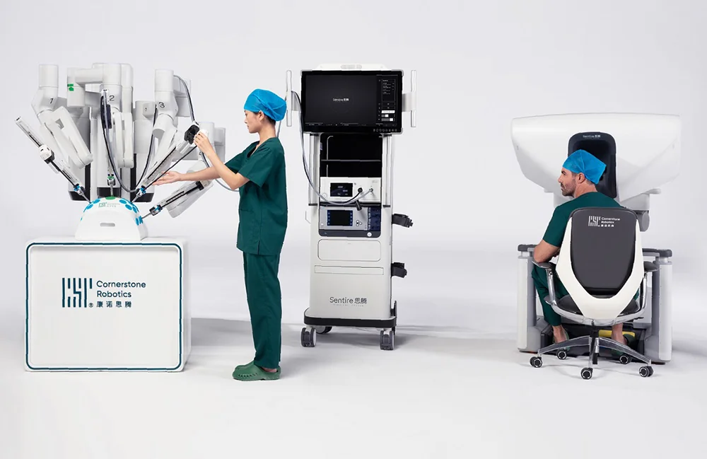

Database · Surgical Robotics
Cornerstone Robotics
Cornerstone Robotics (康诺思腾) is a Shenzhen surgical-robot unicorn whose Sentire endoscopic surgical robot (C1000) won NMPA approval and CE marking.
Surgical Medical Shenzhen

Company Overview
- Cornerstone builds full-stack self-developed surgical robots, mastering mechanics, algorithms, electrical architecture, software and vision.
- Its flagship Sentire C1000 is approved by China's NMPA and used in leading hospitals in mainland China, Hong Kong and Europe.
- Received CE marking (MDR), entering a new phase of global expansion.
Key Facts
| Full Name | Shenzhen Cornerstone Robotics Technology Co., Ltd. |
|---|---|
| Chinese Name | 深圳康诺思腾科技有限公司 |
| Founded | 2019 |
| Headquarters | Shenzhen |
| Core Products | Sentire (思腾) endoscopic surgical robot C1000 |
| Funding | About US$200M+ raised; unicorn status |
| Status | NMPA-approved; expanding in EU & Asia |
Actuators & Sensors
- Articulated endoscopic instruments incl. 5mm wristed tools.
- Force feedback & dual-stage closure technology.
- High-precision motion control and 3D vision.
Supply-Chain Analysis
- Fully self-developed core stack to control cost and quality.
- Shenzhen manufacturing + global clinical partnerships.
Competitor Comparison
Competes with Intuitive's da Vinci in China; part of a wave of domestic surgical-robot makers (including MicroPort, Edge Medical).